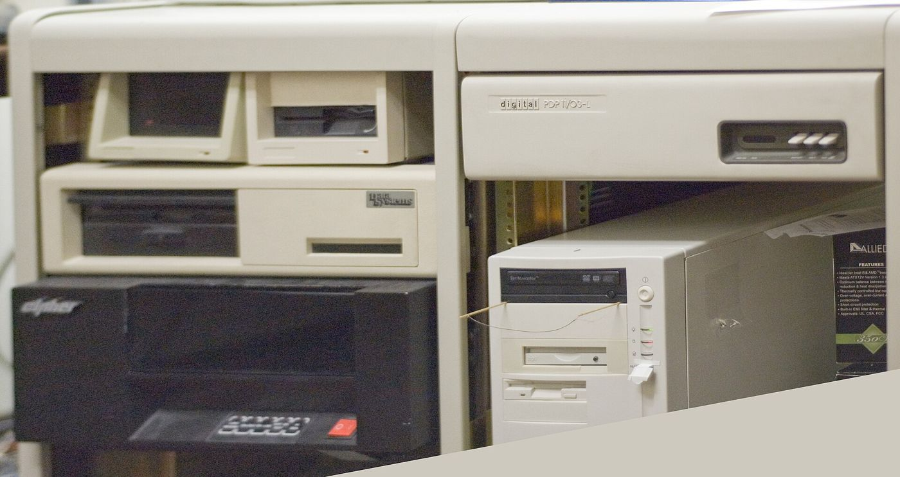

Algoritmos II, na prática
As aulas A1 a A12 explicadas com código e diagramas de memória, e cada questão das listas do professor virando exercício de clicar, corrigir ou encaixar.
Estudar o 2º bimestre
A ideia da matéria inteira
Variável é caixa com endereço . Ponteiro guarda o endereço. Lista ligada é uma fila de caixas apontando para a próxima
. Ponteiro guarda o endereço. Lista ligada é uma fila de caixas apontando para a próxima .
.

1º bimestre
A1 a A5 · funções, vetores, ordenação, busca, structsA1 · Funções
61 exercíciosUm bloco de comandos com nome, que só roda quando é chamado. Escreve uma vez, usa quantas vezes precisar, e devolve um resultado para quem chamou.
A2 · Funções e vetores
14 exercíciosUm vetor passado para uma função não é copiado: vai o endereço do começo. Por isso a função consegue ler e alterar os elementos originais.
A3 · Ordenação
14 exercíciosTrês jeitos de colocar um vetor em ordem comparando elementos: trocar vizinhos, escolher o menor, ou inserir cada um no lugar certo.
A4 · Busca
17 exercíciosProcurar olhando um por um funciona sempre. Se o vetor estiver ordenado, dá para descartar metade a cada comparação.
A5 · Structs
40 exercíciosUm registro junta dados de tipos diferentes que formam uma coisa só: um aluno, um produto, uma turma. Cada campo se acessa com um ponto.
2º bimestre
A8 a A12 · ponteiros, memória dinâmica, listasA8 · Ponteiros
35 exercíciosUma variável guarda um valor; um ponteiro guarda onde esse valor mora. Com isso, uma função consegue mexer nas variáveis de quem a chamou.
A9 · Alocação dinâmica
11 exercíciosEm vez de chutar o tamanho do vetor na hora de escrever o código, o programa pede a memória que precisa enquanto roda e devolve quando termina.
A10 · Ponteiros para structs
10 exercíciosUma struct também mora num endereço. Com um ponteiro para ela, uma função lê e altera os campos do registro original, e a seta -> deixa isso curto.
A11 · Funções que retornam ponteiro
10 exercíciosÀs vezes o resultado não é um valor, e sim um lugar. A função devolve o endereço de onde a resposta está, e quem chamou pode ler ou alterar ali mesmo.
A12 · Listas simplesmente ligadas
13 exercíciosCada elemento vive num nó alocado na hora, e cada nó guarda o endereço do próximo. A lista cresce e encolhe sem mover ninguém de lugar.
Nada de escrever do zero
As listas pedem programas inteiros; aqui cada questão vira uma tarefa de leitura de código, que é o que a prova cobra. Três formatos, sempre com a correção na hora e o porquê de cada alternativa errada.
Múltipla escolha
printf("%d", *p);250x1000Qual é a saída, qual linha tem o erro, quanto vale a variável. As saídas foram conferidas rodando o programa.
Corrigir código
*pares++;(*pares)++;Um trecho com um erro. Primeiro você aponta a linha, depois escolhe como ela deve ficar.
Encaixar trechos
&x*xp->proxp.proxCódigo com lacunas e um banco de blocos, alguns quase certos. Arraste com o mouse ou o dedo, ou toque no bloco e depois na lacuna.
V1, V2, V3
V1V2V3Cada exercício existe em três versões com nomes, valores e tipos diferentes. Acertar as três é sinal de que o raciocínio ficou, não a resposta.

Teste agora
Um exercício da A8 para sentir o formato: complete a troca por ponteiros.